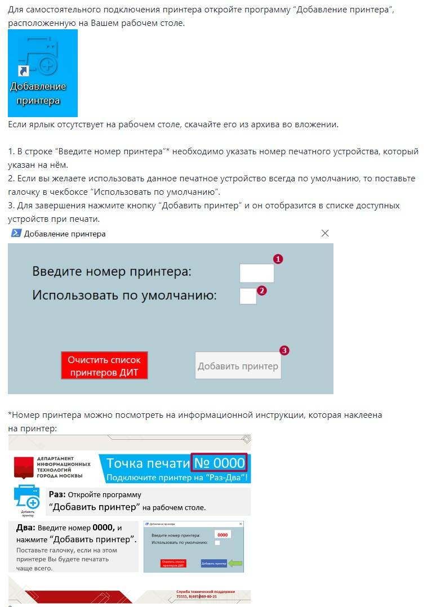

Подключение сетевого принтера
Три шага: открыть ярлык «Добавление принтера», ввести номер печатного устройства с наклейки и нажать «Добавить принтер». Если ярлыка на рабочем столе нет — скачайте его архивом ниже.
Нет ярлыка «Добавление принтера» на рабочем столе? Скачайте архив с ярлыком и распакуйте
в удобное место.
Скачать ярлык (.zip)

Нажмите на картинку, чтобы открыть её в полном размере.